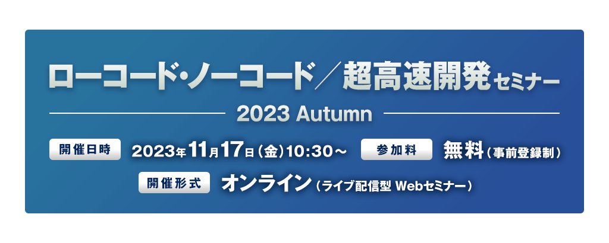

お申し込み受付を
終了しました
日経BP発行『DXサーベイ 2023-2025 674社の成功・失敗の実態と課題分析』によると、「DXで成果を上げている」国内企業は、いまだに約3割に留まっており、十分な成果を上げているとはいえないのが実態です。
DX推進が企業の喫緊の課題である中、より高速に開発しようという動きが活発になるにつれ、「ローコード／ノーコード開発」は注目を浴びています。多くの企業がIT人材不足に悩む中、業務部門のスタッフが開発に参加できるようになるのと同時に、現場が求める仕様 ・要件の変更へ迅速に対応できることも大きなメリットであり、次々と新しいツール／手法が登場しています。
そして、効果的に導入するためには、ローコード／ノーコードはもちろん、開発プロセス全体を高速化する超高速開発に最適なツール／手法を選定することが肝要です。しかし、数多くのツール／手法から自社に合うものを選択することや、どこで、どのように活用をするかを見極めることは容易ではなく、導入を成功させている企業がある一方で、うまく導入が進まない企業があるのも事実です。
このような背景のもと、日経クロステックでは『ローコード・ノーコード／超高速開発 セミナー 2023 Autumn』を開催します。
本セミナーは、成果を上げている企業の事例や戦略を多数紹介するだけでなく、それを可能にしたツール／手法も解説し、ローコードやノーコード、あるいは超高速開発の導入を具体的に支援するものです。
ぜひこの機会にセミナーに参加し、ヒントを得ませんか？
本セミナーはオンラインセミナー（ライブ配信）です。
ご講演終了後に主催者アンケートがございます。
ご回答頂きました方の中から抽選で100名様に
「Amazonギフト券（1,000円分）」をプレゼントさせて頂きます。
ぜひ最後までご視聴ください。
開催概要
- 名称
- ローコード・ノーコード／超高速開発セミナー2023 Autumn
- 日時
- 2023年11月17日（金）10:30～15:50
- 開催形式
- オンライン（ライブ配信型 Webセミナー）
- 主催
- 日経クロステック
- 協賛
-
- アステリア、
- 日立ソリューションズ・クリエイト、
- インテリジェント・モデル、
- セールスフォース・ジャパン（Mulesoft）、
- ServiceNow Japan
- （ABC順）
- 協力
-
- 日経コンピュータ
- 受講料
- 無料（事前登録制）
プログラム
※講演者や講演時間など、プログラムは変更になる場合がございます。予めご了承ください。
-
10:30～11:00
-
【基調講演】
DX推進と情シスの現状打破に向けた最先端ローコード開発戦略
コーセー
情報統括部 DX推進課 濱本 夏綺 氏DX推進が叫ばれる昨今、事業会社の情報システム部門に求められることは、ビジネスと技術の両面で複雑化してきています。 本講演では、DX推進を掲げるコーセーが、ローコード開発でモダンテクノロジーとUX追求を両立した事例をご紹介するとともに、情シスの課題を打破するためのローコード活用の展望をお話します。
-
11:05～11:35
-
【ソリューション講演】
インテリジェント・プラットフォームで変わるローコード開発
ServiceNow Japan
ソリューションコンサルティング事業統括 スペシャリストSC本部クリエイターワークフロー部
アドバイザリーソリューションコンサルタント 佐藤 淳 氏ServiceNow Japan
ソリューションコンサルティング事業統括 スペシャリストSC本部クリエイターワークフロー部
ソリューションコンサルタント 郷津 朋稀 氏業務効率向上を実現するアプリ開発する為には何が必要でしょう？ローコード開発で素早く開発できるだけでなく、アプリを目的達成の為に柔軟に進化できる事が重要になります。ServiceNowでは、インテリジェント機能によって開発から進化までを強力に支援しています。そんなひと味違う開発の様子を紹介します。
-
11:40～12:10
-
【ソリューション講演】
事例とデモで学ぶ、ノーコードツール活用による現場主導のDX！ 〜内製で実現するアナログ業務のデジタル化と定型業務の自動化〜
アステリア
マーケティング本部
プロダクトマーケティング部 プロダクトマネージャー東海林 賢史 氏DXを推進する上で、既存業務の改善やシステムの整備、IT人材の確保など課題は山積みです。これらの課題を月額数万円〜の低コストで解決し、アナログ業務のデジタル化からシームレスなシステム連携、業務自動化、データ活用までを内製で実現する「Platio」「ASTERIA Warp」について、事例とデモを交えてご紹介します。
-
お昼休憩
-
13:00～13:30
-
【特別講演】
ノーコードツールで実現する現場駆動のAI実装
ダイハツ工業
DX推進室データサイエンスグループ（兼）東京LABOデータサイエンスグループ太古 無限 氏ダイハツ工業では、AI活用事例が急増しています。その秘訣はノーコードツールの活用であり、現場駆動でAI実装をスピーディに進めています。本講演では、ノーコードツールの考え方と具体的な事例を紹介します。
-
13:35～14:05
-
【ソリューション講演】
あなたの会社に埋もれた情報資産を蘇らせる超高速開発ツールとは
キヤノン電子テクノロジー
金融ビジネス部
部長齋藤 慶 氏 （提供：インテリジェント・モデル）個別導入されたシステムや全社横断での情報活用の仕組みの不在により、せっかくの貴重な情報資産が埋もれていませんか？本講演では、超高速開発ツールを活用して企業の情報資産の価値を高め、発展に寄与した当社製品の事例について、超高速開発ツールを選んだ理由、実際の活用効果をご紹介します。
-
14:10～14:40
-
【ソリューション講演】
コードを書かずにシステム間の連携を実現し、業務プロセスの自動化を実現
セールスフォース・ジャパン
ソリューション・エンジニアリング統括本部
MuleSoft本部
第一ソリューション部
リードソリューションエンジニア 磯野 健彦 氏自動化による業務の効率化が注目されています。Salesforce の MuleSoft では、複数の自動化ソリューションを用意。企業は、メールの送受信などのシンプルな自動化から複数アプリケーションの連携が必要なビジネスプロセスの自動化まで、あらゆるレベルへの対応が可能になります。本セッションでは、デモも用意しております。ぜひ、ご覧ください。
-
14:45～15:15
-
【ソリューション講演】
DX成功の秘訣！WebPerformerによるレガシー脱却事例
日立ソリューションズ・クリエイト
産業・流通第1営業本部 第2部 第1グループ
主任湯澤 祐二 氏DXへの取り組みにおいてレガシーシステムの更新が課題となる中、解決の一助となるのがローコード開発ツールです。
開発の効率化、コスト削減など、ローコード開発に期待した効果は得られていますか？本セミナーではローコード開発ツール「WebPerformer」を用いたモダナイズによって、開発の効率化と業務の効率化の両方を実現した事例をご紹介します。
-
15:20～15:50
-
【特別講演】
ローコード・ノーコード、その前に。
クレディセゾン
テクノロジーセンター センター長藤野 丈二 氏ローコード・ノーコード、一見悩み事を簡単に解決できそうなそんな雰囲気ですが、ソフトウェアエンジニアリングの世界には「銀の弾丸などない」と言われるように、どんな便利なものでも使い方を間違えればうまくいきません。クレディセゾンでのローコード・ノーコードを利用するまでのプロセスや事例が参考になれば幸いです。
お申し込み
■Webセミナーご受講に際し、以下の事項に同意のうえお申込ください。
- 視聴に必要なURLは、登録完了メールでご確認ください。
また、MyPageからも確認ができます。
URLはセミナーに参加する方のみ利用可能とし、再配布を禁止します。 - 受講者は、動画を録画・キャプチャーすることは一切できません。
もし、発見した場合、事務局は削除を要求できることとします。また、SNSなどへのアップも禁止します。 - セミナーの内容や受講者の個人情報などはセミナー内のみとし、口外しないでください。
- システムトラブルなどにより、画像・音声に乱れが生じた場合も対応出来かねますのでご自身でご調整ください。
- 配信中、異常と思われる接続を発見した場合、予告なく切断することがあります。
お問い合わせ
日経BP読者サービスセンターセミナー係
お問い合わせお申し込み受付を
終了しました